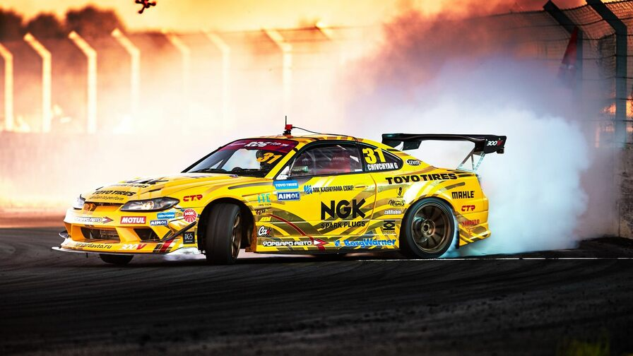
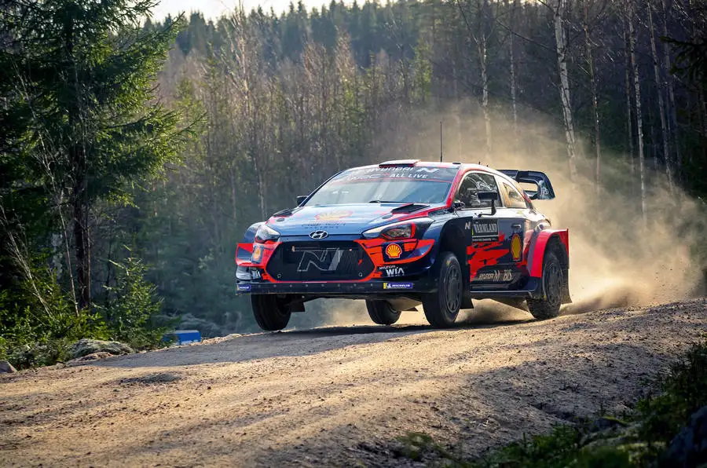

Автоспорт
Автоспорт - це вид спорту в якому автогонщики
заробляють собі на життя, змагаючись в гонках зі своїми суперниками. Це спорт, який
вимагає максимальної концентрації, сили, фізичної підготовки, техніки і безстрашності.
Існує безліч різних видів автоспорту, від ралі і гранд-турів до крос-кантрі та дрег-рейсингу.
Представляємо вам 4 найпопулярніші види автоспорту
Драг-рейсинг
Це змагання на розгін по прямій. Ще до Другої світової війни автолюбителі
влаштовували змагання на розгін на суспільних дорогах, в основному, на чверть милі. У 1950 р. в місті Санта-Ана,
Каліфорнія на місцевому аеродромі було проведено перше офіційне змагання з драгрейсингу.
Найбільш поширена дистанція — класичні ¼ милі. Драгрейсинг влаштовують як на звичайних машинах,
так і на болідах, побудованих спеціально для цього. Дорожня машина проходить дистанцію у
чверть милі за 16 секунд, у той час як драгстер класу
Top Fuel покриває її менш ніж за 5 с, розвиваючи прискорення понад 4g.
Кільцеві перегони
Це змагання, що відбуваються на закритій кільцевій трасі між
двома або більшою кількістю автомобілів, які змагаються одночасно на одній трасі та в
якому швидкість або дистанція, яка пройдена за вказаний час, є визначальним фактором. Кільцеві гонки дуже
популярні у глядачів, адже гонщики і їхні автомобілі видні для глядача на трибуні велику частину часу
гонки, і перед його очима найчастіше знаходиться хтось з гонщиків. Для телеглядачів цей вид гонок кращий,
ніж інші, завдяки щільній боротьбі на трасі, великій кількості обгонів, частих аварій, піт-стопів. Більшість
кільцевих автогонок проводиться на твердому покритті, хоча в північних країнах проводяться
змагання на льодових трасах, а також існують кільцеві перегони на грунтовому покритті.
Дрифт
Змагання на автомобілях під час руху в керованому заносі. В ньому водій
навмисно втрачає зчеплення коліс автомобіля з дорогою, змушуючи його ковзати або “дрифтувати” під час поворотів.
Це мистецтво контролювання автомобіля під час його заносу, зберігаючи оптимальний кут і напрямок руху. У кожному етапі
дрифтінгу приховані свої тонкощі та секрети, які водії вивчають протягом багатьох років практики.Сьогодні дрифт
не просто перегони або шоу, це ціла культура з власною філософією, технікою та героями. Завдяки своєму корінню,
розвитку та людям, які присвятили своє життя цьому виду спорту, дрифтінг займає особливе місце в серцях любителів
автоспорту по всьому світу.


Раллі
На відміну від кільцевих автогонок, де траси будуються спеціально,
траси для ралі, найчастіше, є дорогами загального користування, що частково перекриваються тільки
на час проведення змагання, або взагалі пересіченою місцевістю. Так як одна ділянка траси на ралі ніколи
не повторюється багато разів, то для орієнтації на дуже високій швидкості пілоти користуються допомогою
штурманів, які стежать за дорогою і повідомляють
пілотам про майбутні повороти і перешкоди. Довгий час ралі не приваблювали багатьох глядачів, адже глядач
на трасі бачив машини дуже рідко і майже ніколи не бачив реальної боротьби за місце. Але з розвитком
телебачення ралі отримали значну популярність у телеаудиторії.
